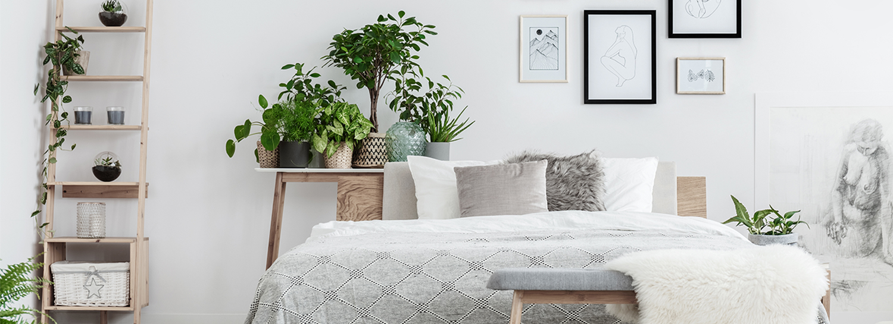

النباتات في غرف النوم وخطر الاختناق
هل وضع النباتات في غرف النوم يسبب الاختناق؟
من الشائع لدى الكثير من الناس خطورة وضع النباتات في غرف النوم لأنها تسبب الاختناق، وهذه المعلومة غير صحيحة.
مع هذا فأن النباتات تمتص ثاني أكسيد الكربون وتبعث الأكسجين أثناء النهار وهذه العملية تعكس أثناء الليل فيمتص الأكسجين ويبعث ثاني أكسيد الكربون. والسؤال هنا؛ هل هذه العملية تسبب الضرر للإنسان؟
في الواقع تنتج النباتات من الأكسجين أكثر مما تستهلك في غرفة النوم . فأثناء النهار تنتج النباتات من الأكسجين 10 أضعاف ما تستهلكه منه أثناء الليل، لذا فإن غرفة النوم التي تحتوى على النباتات ستكون أكثر احتواء للاوكسجين من الغرف التي لاتحتوي على النباتات.
دراسة علمية عن النباتات في غرف النوم
بناء على دراسة أجريت عام 1977 فنسبة الهواء المتأثر بالنباتات سواء بأكسجين أو بثاني أكسيد الكربون وحتى أثناء الليل لا تتجاوز 1.5% وهذه نسبة ضئيلة لا تشكل شيئا في تركيبة هواء الغرف. وبالأخص عندما نعرف أن الإنسان الذي يتواجد معك بالغرفة نفسها يستهلك تقريبا 71 لتر من الأكسجين في الساعة بينما نصف كيلو من الغطاء النباتي يستهلك 0.1 لتر في الساعة فقط.
باقات الأزهار في المستشفيات
هناك مزاعم أخرى بأن الماء الراكد الذي تتواجد به الأزهار المقطوفة يسبب عدى لمرضى المستشفى لاحتوائه على بكتيريا ضارة. وهذا أيضا غير صحيح فبحسب دراسة نشرت عام 2005 في الدورية البريطانية (انفكشن كنترول) بأن هذه البكتيريا لم تكن قط سببا للأمراض.
الجميل أن هناك دراسة أخرى أظهرت أن وجود الأزهار أو النباتات في غرف المرضى يسعدهم ويجعلهم يتناولون كمية أقل من الأدوية ويقلل ضغط الدم لديهم مقارنة بأولائك المرضى الذين ليس لديهم أي نبتة في غرفهم. وهذه الدراسة نشرت عام 2008 في دورية الجمعية الأمريكية لعلوم البستنة، وبهذا نعلم أن النباتات والأزهار مفيدة وجيدة للمرضى تماما كما هي الحال لدى الأصحاء.